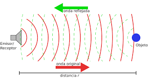

Es una propiedad característica del sonido, que a veces se llama eco. El eco se produce cuando un sonido se refleja en un medio más denso y llega al oído de una persona con una diferencia de tiempo igual o superior a 0,1 segundos, respecto del sonido que recibe directamente de la fuente sonora.
Una onda se refleja (rebota al medio del cual proviene) cuando topa con un obstáculo que no puede traspasar ni rodear.
El tamaño del obstáculo y la longitud de onda determinan si una onda rodea el obstáculo o se refleja en la dirección de la que provenía.
Si el obstáculo es pequeño en relación con la longitud de onda, el sonido lo rodeará (difracción), en cambio, si sucede lo contrario, el sonido se refleja (reflexión).
Si la onda se refleja, el ángulo de la onda reflejada es igual al ángulo de la onda incidente, de modo que si una onda sonora incide perpendicularmente sobre la superficie reflejante, vuelve sobre sí misma.
La reflexión no actúa igual sobre las altas frecuencias que sobre las bajas. La longitud de onda de las bajas frecuencias es muy grande (pueden alcanzar los 18 m), por lo que son capaces de rodear la mayoría de obstáculos; en cambio, las altas frecuencias no rodean los obstáculos por lo que se producen sombras detrás de ellos y rebotes en su parte delantera.

Prodrias ver este video para poder entender mas sobre el tema